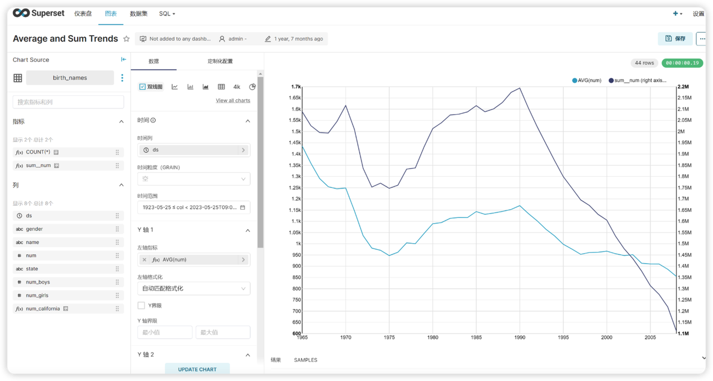
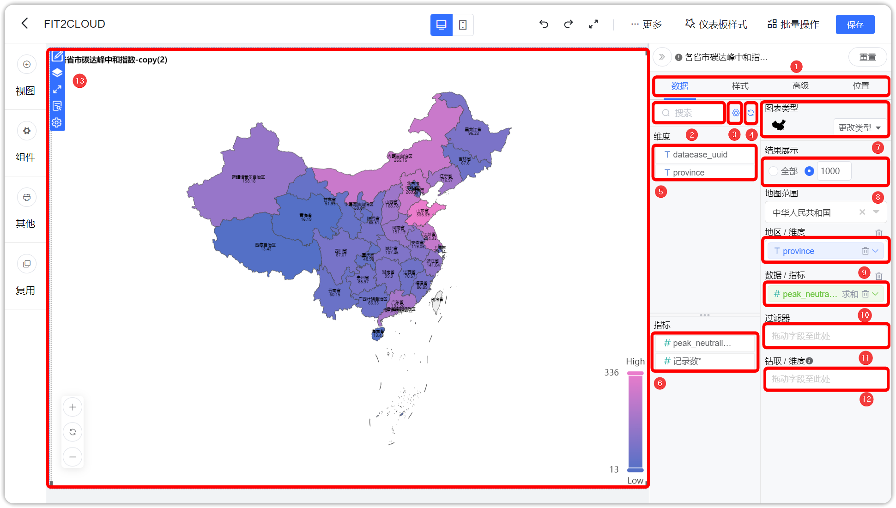
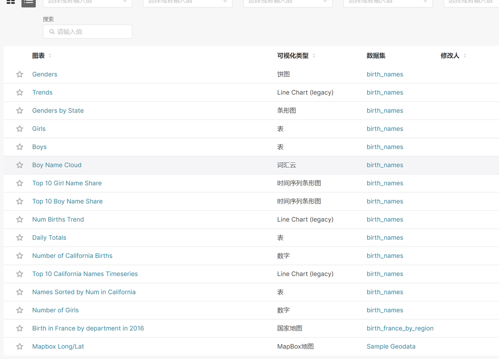
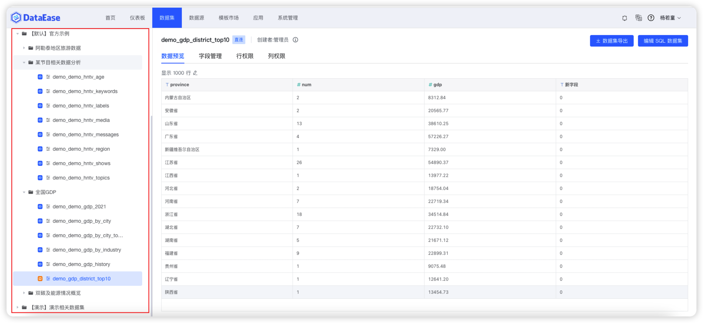

“使用DataEase后，我们把使用过程中发现的一些不方便的地方提出来，项目团队和用户一起想办法解决和优化，共同把这个产品做得更好。DataEase是一个开发者和用户共创的开源产品。”
——DataEase开源社区核心用户 马先生
编者注：以下内容基于DataEase开源社区核心用户马先生的社区分享整理而成。
马先生任职于一家全球化社交娱乐公司，公司日常业务运营涉及到大量平台的日活、月活等数据信息。从2021年至今，公司根据自身的业务运营需要，前后选择了三款BI工具，分别是Quick BI、Superset和DataEase，而每款产品的选择与淘汰，都与公司的需求息息相关。
■ Quick BI时期：在2021年8月之前，该公司还没有建立完善的数据仓库，公司内部也只有一个人负责数据可视化工作，使用的产品是Quick BI个人版。当时大部分数据都是以邮件的形式发送给业务部门，但邮件的数据是静态数据，无法直接查询历史数据，历史数据需要查询历史邮件，比较耗费人力；
■ Superset时期：随着公司业务的发展，该公司逐渐成立了一个成熟的数据部门，搭建了自己的数仓系统，并开始使用Superset。相比Quick BI，Superset最大的优势在于这是一款开源软件，不必通过以数据下载或者页面截图之后发邮件的方式分享给业务部门。仅需登录同一个系统，数据部门做完的数据就可以呈现给业务部门，并且可以由业务部门自行查阅历史的留存数据。无论是明细数据还是某个单一维度的数据，都可以查看历史数据。在此基础上，他们完成了Quick BI时期（邮件需求）到Superset时期的第一次跨越——也就是从静态数据到动态数据的转变；
■ DataEase时期：完成第一次转变后，马先生所在的数据团队开始思考第二个问题。Superset虽然是开源软件，但它毕竟是外国的开源项目，不符合国人的使用习惯，并且在使用功能上也不能完全满足公司的需求。例如，技术部门需要制作一个性能监控数据的展示大屏，通过Superset来实现很麻烦。于是数据团队开始寻找下一个更适合自己公司的的BI产品。这时他们偶然发现了国产的开源可视化产品——DataEase，这款产品完美地解决了马先生所在团队在使用Superset时碰到的两个问题：即不满足国人使用习惯，以及实时数据刷新不好处理。于是，他们实现了第二次跨越——从可用产品到易用产品。
在马先生使用Quick BI、Superset再到DataEase的BI产品升级过程中，DataEase开源社区也见证了他逐渐加入到开源世界，从产品使用者到产品贡献者的旅程。
社区用户访谈
什么样的契机让您开始接触并使用DataEase的呢？
马先生：之前我们公司一直使用Superset作为数据图表展示系统。随着业务的增长，有很多运营和产品同事希望自己配置报表，他们接触Superset之后，普遍反馈说Superset配置比较繁琐。比如配置折线图，Superset要配置时间列、时间粒度、指标、维度、分组等，很多业务同事在配置图表这一步就迷糊了，很难理解维度、分组这些术语。实际上，业务同事需要的是一个能够把数据集、图表、仪表盘和配置项都集成在一起的、方便配置的图表系统。这种图表系统的学习成本低，可以让业务同事快速上手。
经过了一系列的产品调研之后，发现了DataEase。我在DataEase官网上的测试环境试用了一下，发现还挺好用的，于是就开始给业务部门部署使用了。

▲ 图1 Superset的视图设计页面
▲ 图2 DataEase的视图设计页面■ DataEase视图设计功能区介绍
【序号1】：数据操作区、样式编辑区和高级功能区切换
【序号2】：搜索
【序号3】：字段编辑
【序号4】：更换数据集
【序号5】：可选维度列表
【序号6】：可选指标列表
【序号7】：图表类型（包括ECharts和AntV）
【序号8】：结果展示
【序号9】：维度设置区
【序号10】：指标设置区
【序号11】：结果过滤器
【序号12】：钻取维度设置区
【序号13】：图表展示
您认为DataEase的优势是什么，缺点是什么呢？
马先生：我们公司目前Superset和DataEase都在使用。产品部门主要用的是Superset，运营部门主要用的是DataEase。此外，DataEase主要用来展示UID粒度的数据。
相比DataEase，Superset的优势主要体现在它的缓存机制。随着创建的报表越来越多，请求量增大带来的问题也随之出现。由于我们采用的是直连方式，在应对并行的几百个查询时，DataEase的缓存效果不太明显，响应比较慢。Superset可以自定义缓存的失效时间或者不缓存，这个功能点对我们来说是比较实用的。
DataEase的优势也比较明显，具体包括以下几点：
1. DataEase给我的第一感觉就是界面简洁并且漂亮，它可以方便地制作各种样式的图表，背景图案、图表的样式边框都可以自定义设置。最重要的是，它配置图表的过程足够简洁，对于业务人员来说，他只需要知道需要什么样的数据集，就可以直接创建仪表板。Superset的数据集是一个杂乱无章的列表结构，而DataEase的数据集可以分级分类。

▲ 图3 Superset的使用界面
▲ 图4 DataEase的使用界面2. DataEase的社区交流群内非常活跃，客服也会耐心地解答我们的问题。这是一种开源的生态环境，让我们相信DataEase是一个有活力的项目。
3. DataEase的社区版完全开源，用我们最为熟悉的Springboot+Vue.js技术栈开发，有利于我们在其基础上做一些定制化的东西。
DataEase解决了您公司什么样的业务需求呢？是如何使用DataEase的？
马先生：为了让业务方（例如销售、运营等企业内查看或制作仪表板的人员）更便捷地使用，我们会在DataEase中提前准备好数据集并做好分类。具体操作就是，我们会给每个业务单独创建文件夹，业务下还会根据区域和功能继续创建二级文件夹。通过这样的分类方法，业务方就能很清楚地知道这是什么数据。
有了数据之后，业务方可以很方便地配置自己的报表，释放了开发团队的人力。DataEase还支持分享报表，用户可以把自己的报表方便地分享给别人。现在，如果是业务人员自行配置生成仪表板，就会选择使用DataEase。
DataEase社区版有一些局限性，面对这些局限性你们是怎么做的呢？
马先生：是的，DataEase的社区版没有开放权限管控功能，这对没有二次开发能力的公司来说比较麻烦。因此，如果是以一个团队为单位来使用DataEase，最好还是需要购买企业版。DataEase企业版的权限管控功能可以管控到行权限和列权限，这是很厉害的功能。面对一些需求场景，比如一个仪表板要给不同的业务部门看他们对应的数据，如果通过DataEase的行权限功能来配置，几十秒就搞定了。目前我们则只能给每个业务部门都做一个仪表板。
其次，针对我们自己的业务需求，运营的同事希望对看板指标进行监控，所以我们开发了DataEase的报警功能，对于达到阈值的指标可以直接发送报警邮件、短信、电话等。
在DataEase的模板市场里，用户可以免费下载模板直接应用到自己的仪表板中。您觉得这会带给用户一些便利吗？
马先生：我用过DataEase的模板市场，感觉挺方便的。我们把模板下载下来之后可以直接替换数据来使用模板，不用自己再去做样式。听说用户也可以给模板市场投稿，不过我们还没有投过稿。有个小建议，模板市场里大多数是深色系的模板，我们公司用的是则是浅色系的仪表板居多。因为深色的仪表板视觉上比较晃眼，浅色的仪表板会给人干净清爽的感觉。
您之前提到了DataEase的社区交流群比较活跃，那您和您的同事在群里也会和大家一起沟通交流或者问问题吗？
马先生：我把我的同事们都拉到社区群了。虽然我们对DataEase做了二次开发，但是很多小的功能点我们依然不清楚，所以同事们遇到问题也会在交流群里提问。有时候我看到了别人问的问题我能解答，我也会回答一下。
我还给DataEase修复过几个小Bug，提交过两次PR，都已经被合并到主分支中了。因为我之前做过开源，所以对提PR、跑测试、合并到主分支等整个代码开发的流程规范都很清楚。有时候我们可能发现了一些小Bug，但不是很影响DataEase的主功能，我们就会按照流程提一个PR。
您现在对DataEase项目已经非常了解了。对它有什么建议吗？
马先生：我之前提到过对比Superset，DataEase的一个不足就是DataEase的缓存效果不太明显，这个问题我觉得如果能做个前端异步就能完美解决。这个不足主要出现在两种使用场景中：
第一种场景是用户点击一个页面没有加载完成时，又点击了另一个页面，DataEase不会立刻跳转，而是需要等到上一个页面加载完成才会跳转。对于用户而言，最好是不用等待当前页面加载完成就可以直接跳转；
第二种场景是，不论是在编辑仪表板还是拖拽维度指标时，DataEase都需要请求数据，因此在数据量大的情况下操作起来就没那么顺滑。如果设置一个按钮，用户点击那个按钮后仪表板才向后台请求数据，做到编辑完再进行整体刷新，这样可以减少请求，让用户使用起来更加丝滑。
缓存问题可以参考一下其他的开源BI产品。企业在选择可视化产品时会有一种本能的不信任，就是用户不知道拿过来之后，这个东西到底能不能用。很多开源BI产品其实也没有怎么运作宣传，但是它们能吸引客户的主要原因在于，这些产品经历了很多用户的实践，所以用户的使用黏性需要时间来沉淀。ToB端的产品需要迭代和更新，吸引更多的企业来使用，进而验证产品的稳定性。这也印证了飞致云的那句口号：“软件用起来才有价值，才有改进的机会”。
DataEase项目之前迭代的速度很快，最近几个月因为要做2.0版本，1.0版本迭代的速度会慢一些。其实我觉得目前这个更新频率也挺好的，Bug修复的速度还是很快，Feature可以慢慢来。因为做产品要考虑到大多数的用户，而不是为某个单一的用户服务，每个需求都要考察得比较全面才好，需要考虑新版本会不会对其他的用户产生影响。